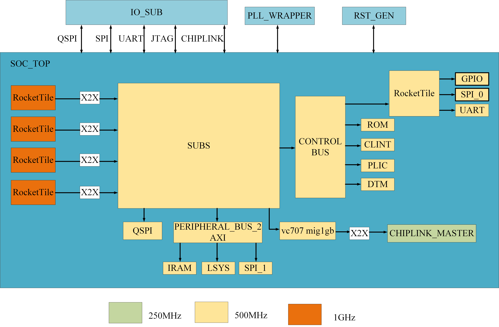
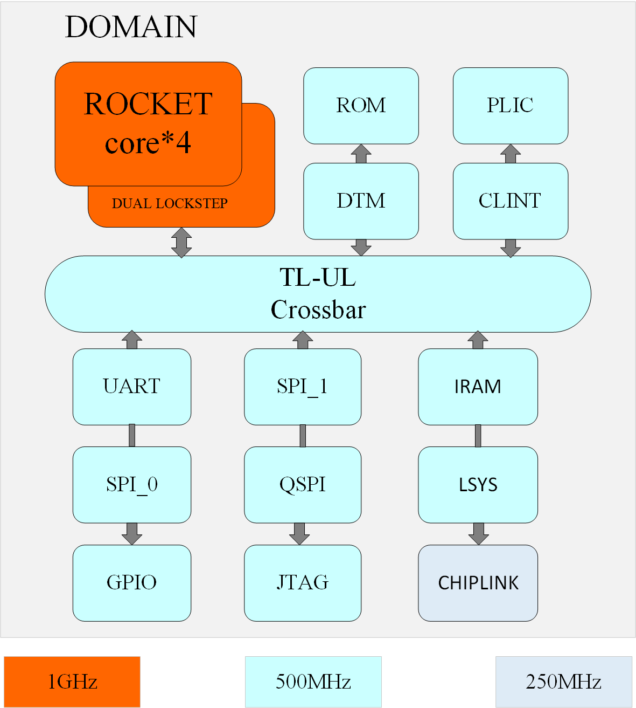

1. Start
1.1 Project
Design of a reconfigurable multi-core heterogeneous processor utilising RISC-V architecture.

Memory Map
| Base | Size (B) | Description | Notes |
|---|---|---|---|
| 0x0000_0000 | 4K | Debug Controller | |
| 0x0000_3000 | 4K | Error Device | |
| 0x0001_0000 | 8K | Mask ROM (32 KiB) | |
| 0x0200_0000 | 64K | CLINT | |
| 0x0C00_0000 | 4M | PLIC | |
| 0x5000_0000 | 0x6000_0000 (256M) | PCIE HOST Space | |
| 0x5000_0000 | 512K | On-chip SRAM | |
| 0x5100_0000 | 4K | SOC_LSYS | |
| 0x5200_0000 | 4K | SPI_1 | |
| 0x6000_0000 | 0x6400_0000 | TIMEOUT | |
| 0x20_0000_0000 | 0x20_0800_0000 / 128M | PCI CTRL Space Timeout | |
| 0x20_0800_0000 | 0x20_1000_0000 | TIME_OUT | |
| 0x20_1000_0000 | 0x21_0000_0000 | TIME_OUT | |
| 0x21_0000_0000 | 0x3F_FFFF_FFFF | TIME_OUT | |
| 0x6400_0000 | 4K | Serial | Narrow and sparse not supported |
| 0x6400_1000 | 4K | SPI_0 | Narrow and sparse not supported |
| 0x6400_2000 | 4K | GPIO | Narrow and sparse not supported |
| 0x8000_0000 | 512M | CHIPLINK | |
| 0xA000_0000 | 512M | DDR (SDRAM) | |
| 0xC000_0000 | 1G | TIME_OUT | Note: Access to this space is not allowed and will cause a bus hang |
| MIG_CHIPLINK_SLAVE | The MIG real space 0x8000_0000 - 0xC000_0000 can be remapped to the following space: 0x1000_0000 - 0xE000_0000 (13*256=3328M) | Slave port requires address remapping, the top 4 bits can be controlled, connected to SOC_LSYS, default top 4 bits changed to 1 | Integrated CHIPLINK into the meishav100 version for subsequent verification https://g-ntwx0319.coding.net/p/v100/assignments/issues/32/detail |
1.2 Background
The demand for artificial intelligence computing power in unmanned systems has surged significantly, rendering traditional isomorphic computing systems inadequate for the requirements. Multi-core heterogeneous processors have garnered substantial attention due to their formidable computing capabilities. Simultaneously, RISC-V, as a fully open-source instruction set architecture, empowers us to design our own CPUs entirely.
1.3 Goal
Design a dispatch chip for unmanned systems with high performance and rich peripherals. At the same time, the chip also has reconfigurable characteristics, that is,appropriate CPU and peripheral configurations can be chosen according to different upper-layer applications to improve computational efficiency.
